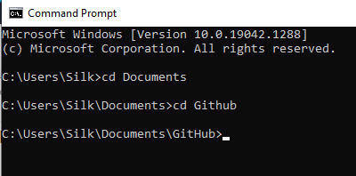
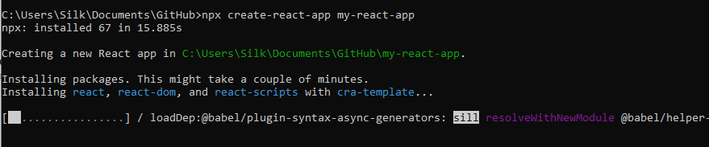
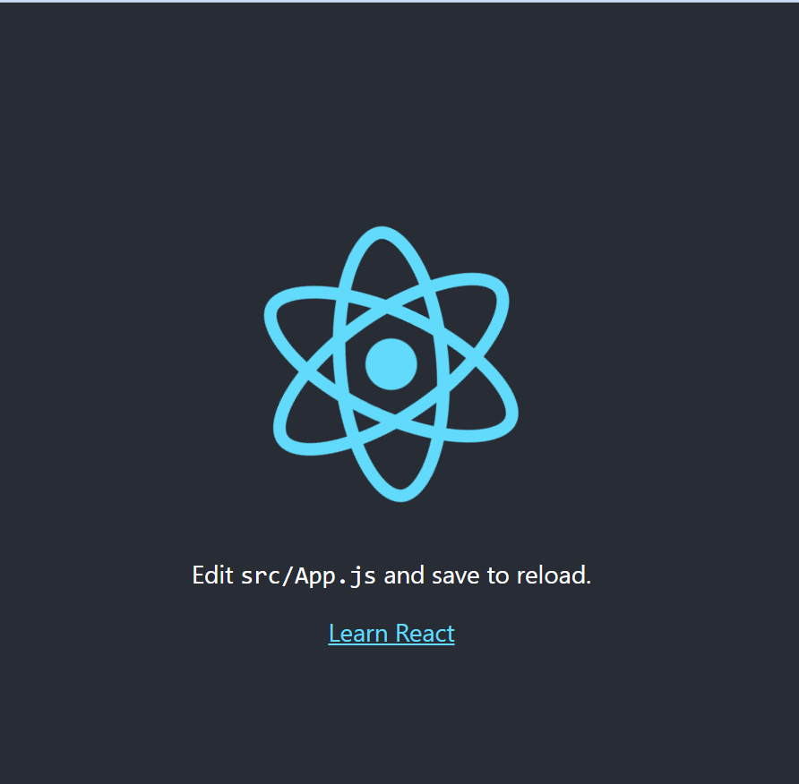
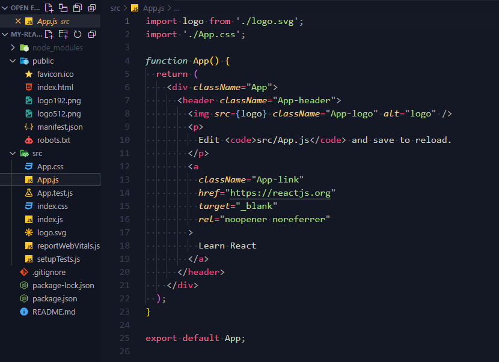
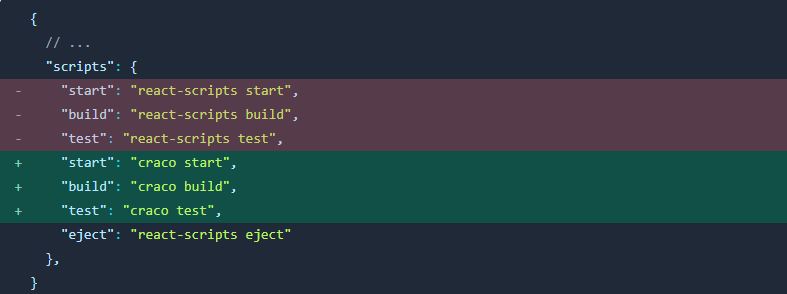
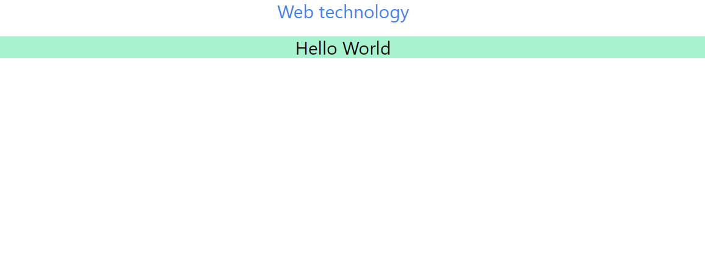

What is React ?
React เป็น JavaScript Libraly Free and Open-Source สำหรับสร้าง User Interface (UI) พัฒนาโดย Facebook เปิดตัวครั้งแรกในปี 2013 โดยลักษณะที่เห็นได้ชัด คือการออกแบบโครงสร้างแบบออกเป็นส่วนย่อยๆ หรือ Component
ทำไมต้อง React
Declarative
React ทำให้การสร้าง UI แบบโต้ตอบไม่ลำบาก ออกแบบมุมมองอย่างง่ายสำหรับแต่ละ state ในแอปพลิเคชันของคุณ และ React จะอัปเดตและแสดงผลเฉพาะส่วนประกอบที่เหมาะสมอย่างมีประสิทธิภาพเมื่อข้อมูลของคุณเปลี่ยนแปลง
Component-Based
สร้างส่วนประกอบ หรือ Component เพื่อจัดการหน้าเว็บหน้า จากนั้นจึงรวมรวมหลายๆ Components เพื่อสร้าง UI ที่ซับซ้อนหรือความสะดวกในการแก้ไขเนื่องจากากจัดเก็บ Component
Learn Once, Write Anywhere
เพื่อให้คุณสามารถพัฒนาคุณสมบัติใหม่ใน React โดยไม่ต้องเขียนโค้ดที่มีอยู่ใหม่ React ยังสามารถแสดงผลบนเซิร์ฟเวอร์โดยใช้ Node และเปิดแอพมือถือโดยใช้ React Native อีกหนึ่งจุดที่น่าสนใจของ React คือมีขนาด Community ขนาดใหญ่ดังนั้นผลิตภัณฑ์ ที่ช่วย Support React จึงถูกพัฒนาอยู่ตลอดเวลา
Website ที่พัฒนาด้วย Reactjs


เริ่มต้นการการใช้งาน React
ติดตั้ง Nodejs
หากยังไม่ได้ติดตั้ง NodeJs ต้องติดตั้งตั้งก่อนเริ่มต้น Project React
ทำความรู้จัก JSX
JSX ถูกพัฒนาให้เป็นส่วนเสริมของ JavaScript (syntax extension to JavaScript) ที่จะช่วยให้เราจัดการกับการเขียน UI (HTML) ให้ถูก render ภายใน React app ได้ง่ายขึ้นและด้วยการที่มันพัฒนาจากพื้นฐานของ JavaScript ทำให้เราสามารถใช้ความสามารถของ JS อย่างเต็มรูปแบบมาช่วยในการคำนวณ จัดการข้อมูลและเหตุการณ์ต่างๆเพื่อให้ UI จะถูก render ตามความต้องการของเราได้
JSX ใน React
เวลาเราพัฒนาแอปขึ้นมาด้วย React ตอนที่เรา render UI เราจะเห็นว่าภายใน component ต่างๆ จะมีการ return HTML element ออกมา ซึ่งนี่แหละคือความสามารถของ JSX จาก Code ด้านล่างจะเป็นการประยุกต์ใช้ JSX ใน React Application
return (
<h1 style={{ color: "blueviolet", textAlign: "center" }}>
animal name: {pathData.animal}<br />
type: {pathData.type}
</h1>
)สร้าง Project React
หลังจากตัดตั้ง NodeJs ใหhทำการเปิด cmd (Command Prompt) แล้วไปยัง Folder ที่ต้องการสร้าง Project React จากรูปด้วยล่างจะสร้าง ใน Documents/Github/

หลังจากเข้าถึง Folder ที่ต้องการเข้าสร้าง Porject React ให้พิมพ์คำสั่งต่อไป
npx create-react-app my-react-appจากตำสั่งข้างต้น หมายความเราจะสร้าง Project React โดยเก็บ Folder ชื่อ "my-react-app"

หลังจากทำการ ติดตั้้ง React รอสักครู่ให้ และทำคำสั่งต่อไป โดยให้เข้าถึง Folder ของ Project React โดยใช้ cd ตามด้วยชื่อ Folder ของ Project React หลังจากนั้นให้พิมพ์คำสั่งต่อไปนี้
npm startหาก run สำเร็จ เปิด web browser ไปยัง http://localhost:3000/ ผลลัพธ์จะได้ดังรูปต่อไปนี้

หลังจากนั้นให้ทำการ คำสั่งด่านล่าง เพื่อเข้าถึง Folder ของ Project React ใน VScode
code .ผลลัพธ์จะได้ดังรูปด้านล่างต่อไปนี้

public/index.html -> คือไฟล์ html หลักของเรา
src/index.js-> เป็นไฟล์หลักของ React
src/App.js-> ไฟล์ Component ที่ชื่อว่า Appใช้งาน Component ภาย React
ในเนื้อหาส่วนนี้เราจะทำการสร้าง Component ภายใน React โดยข้อดี แต่ละ Component จะทำงานแยกส่วน และ ง่ายต่อการแก้ไข หรือ ปรับปรุงประสิทธิภาพของ website
ให้สร้างไฟล์ subject.js ภายใน Folder src จะได้ /src/subject.js ภายในใส่ code ดังนี้
function Subject() {
return (
<div>
<h1>Web technology</h1>
</div>
);
}
export default Subject;
และแก้เนื้อหาไฟล์ /src/App.js ดังนี้
import './App.css';
import Subject from './subject.js';
function App() {
return (
<div className="App">
<Subject />
</div>
);
}
export default App;
เมื่อทำแก้ไข Code ตามขึ้นตอนที่ผ่าน จะได้ผลลัพธ์ดังนี้
จะสังเกตได้่ว่า style ของ Page จะมาจาก import './App.css'; และเนื้อหาของ Page มาจาก src/subject
ข้อควรระวังในการ พัฒนา React คือ การกำหนด Class ของ React จะต้องเป็น className และ การ Import Function จาก Componet จะต้องขึ้นต้นด้วยตัวพิมพ์ใหญ่
การติดตั้ง CSS Framework ใน React
ในเนื้อหาใน ส่วนนี้จะเป็น การสอนติดตั้ง CSS Framework อย่าง TailwindCSS ซึ่งเป็น Framework ที่รวบรวมชุดคำสั่ง CSS ไว้ทำให้สะดวกต่อการใช้งาน และ จุดเด่นด้านความ Customize ได้ง่าย
โดยเราสามารถ เริ่มต้นการติดตั้ง TailwindCSS ด้วยการเปิด Terminal ใน VScode เริ่มต้นด้วย Code ดังนี้
npm install -D tailwindcss@npm:@tailwindcss/postcss7-compat postcss@^7 autoprefixer@^9เนื่องจาก React App ไม่อนุญาตให้คุณแทนที่การกำหนดค่า PostCSS แบบเดิม เราจึงต้องติดตั้ง CRACO เพื่อให้สามารถกำหนดค่า Tailwind ได้
npm install @craco/cracoหลังจากติดตั้งสำเร็จ ต้องทำการแก้ Config package.json

สร้างไฟล์ชื่อ craco.config.js
// craco.config.js
module.exports = {
style: {
postcss: {
plugins: [
require('tailwindcss'),
require('autoprefixer'),
],
},
},
}
ต่อไปคือ การสร้าง Config ของ Tailwind tailwind.config.js
npx tailwindcss-cli@latest initโดยผลลัพธ์ของไฟล์ tailwind.config.jsให้ทำการแก้ เนื้อหาเป็นไปตาม Code ด้านล่างนี้
// // tailwind.config.js
module.exports = {
purge: ['./src/**/*.{js,jsx,ts,tsx}', './public/index.html'],
darkMode: false, // or 'media' or 'class'
theme: {
extend: {},
},
variants: {
extend: {},
},
plugins: [],
}
หลังจากการแก้ Config แล้วให้ทำการเพิ่ม Code ต่อไปนี้ลงในไฟล์ src/index.css
/* ./src/index.css */
@tailwind base;
@tailwind components;
@tailwind utilities;
ทำการ import ไฟล์ src/index.css ลงในไฟล์ src/index.js ลงจากการ import จะได้ code ดังนี้
// src/index.js
import React from 'react';
import ReactDOM from 'react-dom';
import './App.css';
import './index.css';
import App from './App';
import reportWebVitals from './reportWebVitals';
ReactDOM.render(
<React.StrictMode>
<App />
</React.StrictMode>,
document.getElementById('root')
);
reportWebVitals();
ทดสอบการใช้งาน TailwindCSS
เนื้อหาส่วนนี้จะกล่าวจะถึงการทดสอบ Tailwind หลังจากการ Install และ Config เสร็จ
ให้ทำการแก้ไข code ในไฟล์ src/subject.js
// src/subject.js
function Subject() {
return (
<div>
<h1 className="text-3xl text-blue-500">Web technology</h1>
<br/>
<h1 className="text-3xl bg-green-200">Hello World</h1>
</div>
);
}
export default Subject;
เนื้อหาส่วนนี้จะกล่าวจะถึงการทดสอบ Tailwind หลังจากการ Install และ Config เสร็จ
หลังจากทำการแก้ไข code ดังกล่าวจะได้ผลลัพธ์ดังภาพด้านล่าง
